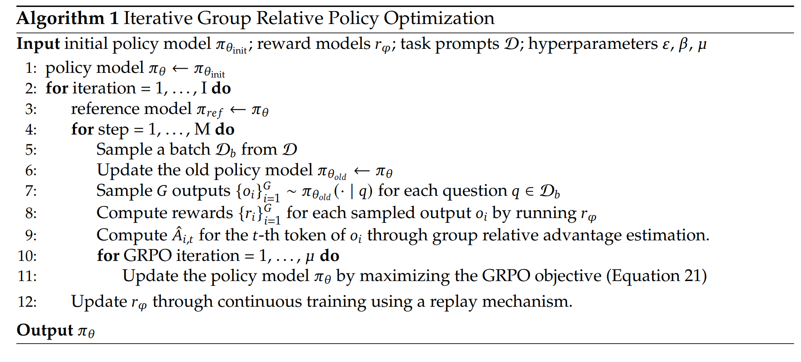
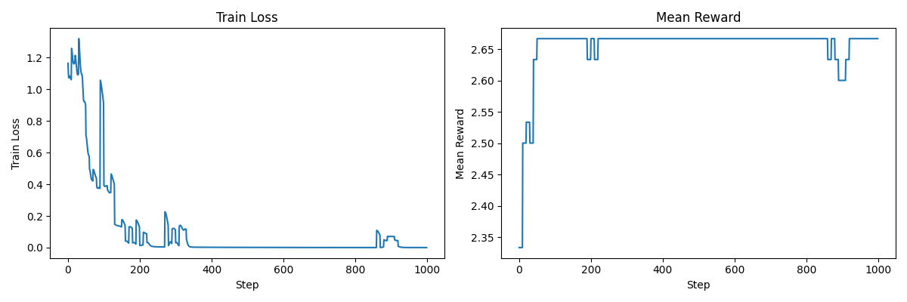
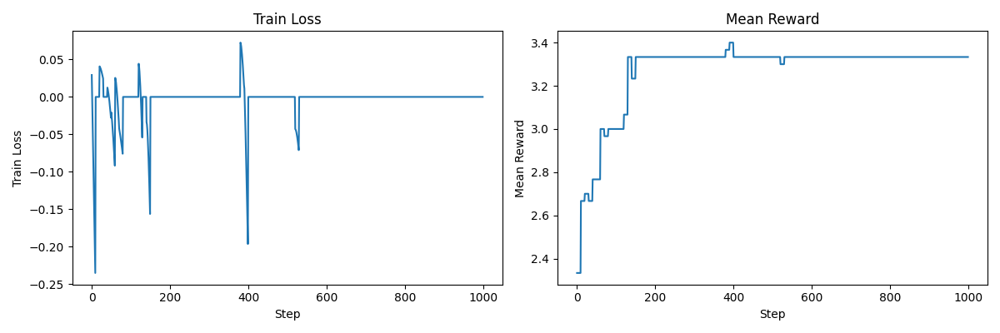
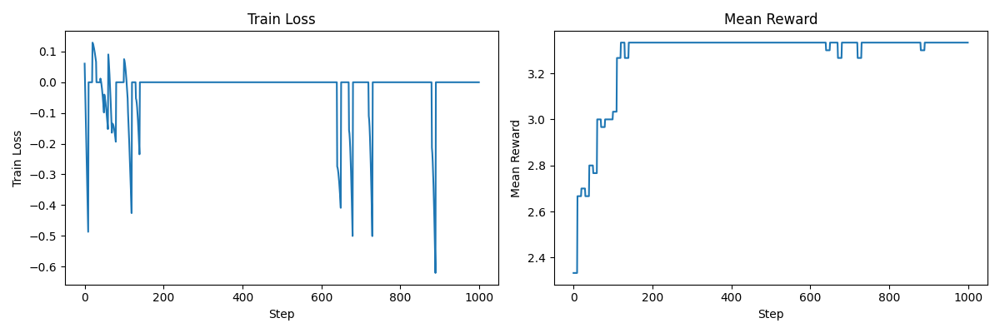

Last lecture: overview of RL from verifiable rewards (policy gradient)
This lecture: deep dive into the mechanics of policy gradient (e.g., GRPO)
State s: prompt + generated response so far
Action a: generate next token
Rewards R: how good the response is; we'll focus on:
Example: "... Therefore, the answer is 3 miles."
Transition probabilities T(s' | s, a): deterministic s' = s + a
Policy π(a | s): just a language model (fine-tuned)
Rollout/episode/trajectory: s → a → ... → a → a → R
Objective: maximize expected reward E[R]
(where the expectation is taken over prompts s and response tokens a)
For notational simplicity, let a denote the entire response.
We want to maximize expected reward with respect to the policy π:
E[R] = ∫ p(s) π(a | s) R(s, a)
Obvious thing to do is to take the gradient:
∇ E[R] = ∫ p(s) ∇ π(a | s) R(s, a)
∇ E[R] = ∫ p(s) π(a | s) ∇ log π(a | s) R(s, a)
∇ E[R] = E[∇ log π(a | s) R(s, a)]
Naive policy gradient:
Setting: R(s, a) ∈ {0, 1} = whether response is correct or not
Challenge: high noise/variance
In this setting, sparse rewards (few responses get reward 1, most get 0)
In contrast: in RLHF, reward models (learned from pairwise preferences) are more continuous
Recall ∇ E[R] = E[∇ log π(a | s) R(s, a)]
∇ log π(a | s) R(s, a) is an unbiased estimate of ∇ E[R], but maybe there are others with lower variance...
Example: two states
Don't want s1 → a2 (reward 9) because a1 is better, want s2 → a2 (reward 2), but 9 > 2
Idea: maximize the baselined reward: E[R - b(s)]
This is just E[R] shifted by a constant E[b(s)] that doesn't depend on the policy π
We update based on ∇ log π(a | s) (R(s, a) - b(s))
What b(s) should we use?
Example: two states
Assuming uniform distribution over (s, a) and |∇ π(a | s)| = 1
Define baseline b(s1) = 10, b(s2) = 1
Variance reduced from 5.323 to 1.155
Optimal b*(s) = E[(∇ π(a | s))^2 R | s] / E[(∇ π(a | s))^2 | s] (for one-parameter models)
This is difficult to compute...
...so heuristic is to use the mean reward:
b(s) = E[R | s]
This is still hard to compute and must be estimated.
This choice of b(s) has connections to advantage functions.
(Note: Q and R are the same here, because we're assuming a has all actions and we have outcome rewards.)
Definition (advantage): A(s, a) = Q(s, a) - V(s)
Intuition: how much better is action a than expected from state s
If b(s) = E[R | s], then the baselined reward is identical to the advantage!
E[R - b(s)] = A(s, a)
In general:
There are multiple choices of δ, as we'll see later.
Group Relative Policy Optimization (GRPO)

Task: sorting n numbers
Prompt: n numbers
Response: n numbers
Reward should capture how close to sorted the response is.
Define a reward that returns the number of positions where the response matches the ground truth.
Define an alternative reward that gives more partial credit.
Note that the second reward function provides more credit to the 3rd response than the first reward function.
Define a simple model that maps prompts to responses
Start with a prompt s
Generate responses a
Compute rewards R of these responses:
Compute deltas δ given the rewards R (for performing the updates)
Compute log probabilities of these responses:
Compute loss so that we can use to update the model parameters
Motivation: in GRPO you'll see ratios: p(a | s) / p_old(a | s)
When you're optimizing, it is important to freeze and not differentiate through p_old
Do it properly:
Sometimes, we can use an explicit KL penalty to regularize the model.
This can be useful if you want RL a new capability into a model, but you don't want it to forget its original capabilities.
KL(p || q) = E_{x ~ p}[log(p(x)/q(x))]
KL(p || q) = E_{x ~ p}[-log(q(x)/p(x))]
KL(p || q) = E_{x ~ p}[q(x)/p(x) - log(q(x)/p(x)) - 1] because E_{x ~ p}[q(x)/p(x)] = 1
Summary:
Let's now define the GRPO algorithm.
Let's actually train some models.
Let's start with updating based on raw rewards.

Looking through the output, you'll see that by the end, we haven't really learned sorting very well (and this is still the training set).
Let's try using centered rewards.

This seems to help, as:
Overall, this is better, but we're still getting stuck in local optima.
Finally, let's try normalizing by the standard deviation.

There is not much difference here, and indeed, variants like Dr. GRPO do not perform this normalization to avoid length bias (not an issue here since all responses have the same length.
Overall, as you can see, reinforcement learning is not trivial, and you can easily get stuck in suboptimal states.
The hyperparameters could probably be tuned better...
Summary
Final two lectures: